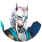

| Độ hiếm | Thức thần | Gợi ý | Vị trí |
|---|---|---|---|

|

Chouchin Obake
Đăng Lung Quỷ
Lồng đèn
Dang Lung Quy
Long den
|
Chương 1 - Amanojaku Midori đầu tiên có 2 (ải Thường); Chouchin Kozou thứ hai có 2;
Chương 2 - Hakaarashi no Rei thứ hai có 2; Kiseirei đầu tiên có 2;
Chương 3 - Akajita đầu tiên có 2; Heiyo thứ hai có 2;
Chương 5 - Boss Kamigui có 1;
Chương 6 - Cả 2 Chouchin Obake đều có 1;
Chương 7 - Kappa thứ hai có 1;
Chương 9 - Chouchin Kozou thứ nhất có 3; Chouchin Kozou thứ hai có 1; Boss Mouba có 1;
Chương 13 - Boss Kubinashi có 1;
Chương 17 - Boss Lãnh chúa Arakawa có 1;
Kappa - Tầng 3 có 2;
Ubume - Tầng 5 có 1; Tầng 7 đến 10 có 1;
Kamaitachi - Tầng 5 có 2;
Umibouzu - Tầng 1 có 3;
Aoandon - Tầng 1 có 3;
Shishio - Tầng 2 có 3;
Kyuuketsuhime - Tầng 2 có 3;
Lãnh chúa Arakawa - Tầng 1 đến 3 có 3;
Yuki Douji - Tầng 2 có 3;
Kiyohime - Tầng 1/3 có 1;
Kingyo Hime - Tầng 8 có 2;
|
|
|
|

Chouchin Kozou
Đề Đăng Tiểu Tăng
Cầm đèn
De Dang Tieu Tang
Cam den
|
Chương 1 - Amanojaku Midori thứ hai có 2; Cả 2 Chouchin Kozou có 1;
Chương 3 - Akajita thứ nhất có 1; Heiyo thứ nhất có 1 (ải Khó có 2); Heiyo thứ hai có 1;
Chương 7 - Cả 3 Chouchin Kozou đều có 1;
Chương 8 - Boss Momo có 2;
Chương 9 - Cả 2 Chouchin Kozou đều có 1;
Chương 12 - Doujo thứ nhất có 2;
Chương 15 - Cả 3 Chouchin Kozou đều có 1;
Yêu khí - Gaki có 3; Futakuchi có 4; Kuro Mujou có 3; Umibouzu có 4;
Kappa - Tầng 1/2 có 3;
Kamaitachi - Tầng 1 có 3;
Umibouzu - Tầng 1 có 1; Tầng 4 có 2;
Aoandon - Tầng 2 có 1; Tầng 5 có 3;
Shishio - Tầng 1 có 1; Tầng 5 có 3;
Kyuuketsuhime - Tầng 2 có 3;
Yuki Douji - Tầng 2 có 1;
Kiyohime - Tầng 2 có 3;
|
|
|
|

Akajita
Xích Thiệt
Mây điện
Xich Thiet
May dien
|
Chương 3 - Akajita thứ nhất có 1; Akajita thứ hai có 1;
Chương 10 - Satori thứ hai có 1;
Chương 15 - Tất cả quái đều có 1 trừ Boss;
Chương 16 - Akajita thứ nhất có 1; Akajita thứ hai có 2; Akajita thứ ba có 1;
Chương 23 - Cả 2 Hone Onna có 3;
Momiji - Tầng 6 và 7 có 1;
Kappa - Tầng 3 có 1;
Ame Onna - Tầng 4 đến 6 có 1;
Ootengu - Tầng 5 và 6 có 1;
Kamaitachi - Tầng 1 có 3; Tầng 6 có 1;
Umibouzu - Tầng 3 có 2;
Aoandon - Tầng 1 có 1; Tầng 3 có 3;
Shishio - Tầng 4 có 3;
Kyuuketsuhime - Tầng 1 có 1; Tầng 4 có 3;
Lãnh chúa Arakawa - Tầng 1 đến 3 có 1;
Kiyohime - Tầng 2 có 1; Tầng 3 có 4; Tầng 9 có 2;
Kingyo Hime - Tầng 9 có 2;
|
|
|
|

Hakaarashi no Rei
Đạo Mộ Tiểu Quỷ
Hồn Ma
Dao Mo Tieu Quy
Hon Ma
|
Chương 2 - Hokigami có 1; Cả 2 Hakaarashi no Rei đều có 1; Kiseirei thứ hai có 2;
Chương 12 - Cả 2 Doujo đều có 1;
Chương 23 - Cả 2 Hakaarashi no Rei đều có 1; Boss Kairaishi có 3;
Kappa - Tầng 1/2 có 1;
Ame Onna - Tầng 1/2/3 có 3;
Youtouchi - Tầng 1 có 3;
Ubume - Tầng 4 đến 6 có 3;
Kamaitachi - Tầng 3 có 3;
Umibouzu - Tầng 3 có 3;
Shishio - Tầng 1 có 2;
Kyuuketsuhime - Tầng 1 có 3;
Lãnh chúa Arakawa - Tầng 1 có 3;
Yuki Douji - Tầng 3 có 3;
Kiyohime - Tầng 2 có 3;
Kingyo Hime - Tầng 1 có 3; Tầng 9 có 2;
|
|
|
|

Kiseirei
Ký Sinh Linh
Ky Sinh Linh
|
Chương 2 - Hokigami có 1; Hakaarashi no Rei thứ nhất có 2; Cả 2 Kiseirei đều có 1;
Chương 3 - Boss Hououka có 3;
Chương 5 - Cả 2 Kanko đều có 1;
Chương 7 - Boss Youko có 1;
Chương 11 - Hồn Samurai thứ nhất có 3;
Chương 12 - Boss Yuki Onna có 1;
Chương 16 - Cả 3 Akajita đều có 3;
Chương 26 - Cả 2 Kubinashi có 1;
Umibouzu - Tầng 2 có 3;
Aoandon - Tầng 1 có 1;
Shishio - Tầng 2 có 1;
Kyuuketsuhime - Tầng 1 có 3;
Lãnh chúa Arakawa - Tầng 1 đến 3 có 3;
Yuki Douji - Tầng 1 có 1; Tầng 4 có 3;
|
|
|
|

Karakasa Kozou
Đường Chỉ Tán Yêu
Ô Dù
Duong Chi Tan Yeu
O Du
|
Chương 4 - Hokigami thứ hai có 2 (ải Khó có 3); Cả 2 Karakasa Kozou đều có 1; Amanojaku Aka đầu tiên có 1; Amanojaku Aka thứ hai có 2;
Chương 8 - Cả 2 Karakasa Kozou có 1;
Chương 13 - Cả 3 Karakasa Kozou có 1;
Yêu khí - Gaki có 1;
Ame Onna - Tầng 1 đến 3 có 1; Tầng 4 đến 6 có 3;
Ubume - Tầng 2 có 3;
Umibouzu - Tầng 2 có 1; Tầng 4 có 3;
Aoandon - Tầng 2 có 3
Shishio - Tầng 1 có 3
Yuki Douji - Tầng 2 có 3;
Kiyohime - Tầng 2 có 1;
|
|
|
|

Amanojaku Midori
Thiên Tà Lục Yêu
Thien Ta Luc Yeu
|
Chương 1 - Cả 2 Amanojaku Midori có 1; Chouchin Kozou đầu tiên có 2;
Chương 2 - Boss Zashiki Warashi có 2;
Chương 5 - Kanko cuối cùng có 3;
Chương 6 - Cả 2 Amanojaku Ao có 3; Boss Kodokushi có 3;
Chương 8 - Cả 2 Amanojaku Ao có 1;
Chương 13 - Cả 3 Karakasa Kozou có 2;
Chương 15 - Cả 3 Amanojaku Ao có 1;
Yêu khí - Shouzu có 8; Gaki có 6; Hone Onna có 6; Kyonshi Ani có 4; Umibouzu có 1;
Kappa - Tầng 6 có 1;
Youtouchi - Tầng 6 và 7 có 1;
Umibouzu - Tầng 5 có 1;
Aoandon - Tầng 5 có 2;
Shishio - Tầng 3 có 3;
Kyuuketsuhime - Tầng 3 có 3;
Yuki Douji - Tầng 3 có 1;
|
|
|
|
Amanojaku Aka
Thiên Tà Xích Yêu
Thien Ta Xich Yeu
|
Quỷ Đỏ
Quy Do
|
Chương 4 - Karakasa Kozou đầu tiên có 3; Karakasa Kozou thứ hai có 1 (ải Thường); Cả 2 Amanojaku Aka có 1;
Chương 5 - Norikabe đầu tiên có 2; Norikabe thứ hai có 3; Cả 2 Hokigami có 1;
Chương 6 - Cả 2 Kochosei có 2;
Chương 7 - Boss Youko có 2;
Chương 11 - Cả 2 Hitotsume Kozou có 2;
Chương 13 - Cả 3 Gaki có 3; Cả 3 Karakasa Kozou có 1;
Chương 14 - Cả 3 Hokigami có 3; Boss Yumekui có 3;
Chương 15 - Cả 3 Amanojaku Ao có 2;
Ngự hồn - Tầng 1 có 2;
Yêu khí - Kuro Mujou; Hone Onna; Shouzu; Kyonshi Ani có 1; Umibouzu có 2;
Kappa - Tầng 6 có 1;
Kamaitachi - Tầng 2 có 3;
Umibouzu - Tầng 1 có 1; Tầng 5 có 2;
Shishio - Tầng 3 có 3; Tầng 6 có 1;
Kyuuketsuhime - Tầng 3 có 1;
Yuki Douji - Tầng 3 có 3;
|
|
|
Amanojaku Ki
Thiên Tà Hoàng Yêu
Thien Ta Hoang Yeu
|
Cái Trống
Cai Trong
|
Chương 3 - Cả 2 Amanojaku Ki có 1; Akajita thứ hai có 1;
Chương 5 - Hokigami thứ hai có 2; Kanko đầu tiên có 2;
Chương 8 - Cả 2 Amanojaku Ao có 2;
Chương 12 - Oguna đầu tiên có 1;
Ngự hồn - Tầng 1 có 1;
Yêu khí - Umibouzu có 3; Shouzu có 2; Kyonshi Ani có 1;
Momiji - Tầng 4 và 5 có 1;
Kappa - Tầng 5/6 có 1;
Ubume - Tầng 5 có 1;
Ootengu - Tầng 2 có 1;
Umibouzu - Tầng 1 có 2; Tầng 5 có 1;
Aoandon - Tầng 4 có 3;
Shishio - Tầng 1 có 3;
Kyuuketsuhime - Tầng 3 có 3;
Yuki Douji - Tầng 3 có 1;
|
|
|

Amanojaku Ao
Thiên Tà Thanh Yêu
Thien Ta Thanh Yeu
|
Con Diều
Con Dieu
|
Chương 2 - Boss Zashiki Warashi có 1;
Chương 5 - Boss Kamigui có 2;
Chương 6 - Cả 2 Amanojaku Ao có 1;
Chương 8 - Cả 2 Amanojaku Ao có 1; Boss Momo có 1;
Chương 10 - Cả 2 Ushi no Kokumairi có 2;
Chương 11 - Boss Momiji có 2;
Ngự hồn - Tầng 1 có 1;
Yêu khí - Futakuchi có 3; Kyonshi Ani có 3; Umibouzu có 1;
Kappa - Tầng 6 có 1;
Youtouchi - Tầng 1 đến 3 có 4; Tầng 4 đến 9 có 3; Tầng 10 có 2;
Ubume - Tầng 4 đến 6 có 1;
Kamaitachi - Tầng 4 có 3;
Umibouzu - Tầng 5 có 1;
Aoandon - Tầng 4 có 2;
Shishio - Tầng 2 có 3;
Kyuuketsuhime - Tầng 3 có 2;
Yuki Douji - Tầng 3 có 1;
Kingyo Hime - Tầng 5 có 2;
|
|
|
Hokigami
Trửu Thần
Chổi
Truu Than
Choi
|
Chương 2 - Hokigami có 1;
Chương 3 - Amanojaku Ki đầu tiên có 2 (ải Khó có 1);
Chương 4 - Cả 2 Hokigami có 1; Boss Ame Onna có 2;
Chương 5 - Cả 2 Hokigami có 1;
Chương 6 - Cả 2 Chouchin Obake có 3;
Chương 7 - Koi đầu tiên có 1; Thứ hai có 3;
Chương 8 - Cả 2 Momo có 1; Karakasa Kozou đầu tiên có 3; Karakasa Kozou thứ hai có 2; Boss Momo có 1;
Chương 9 - Tesso đầu tiên có 3; Tesso thứ hai có 2;
Chương 12 - Umibouzu đầu tiên có 1;
Chương 14 - Cả 3 Hokigami có 1;
Yêu khí - Futakuchi có 4; Kuro Mujou có 3; Hone Onna có 4; Kyonshi Ani có 2;
Ubume - Tầng 1 đến 3 có 3;
Ootengu - Tầng 1 có 4; Tầng 2 đến 10 có 3;
Kamaitachi - Tầng 4 có 3;
Umibouzu - Tầng 1 có 3;
Aoandon - Tầng 2 có 3;
Shishio - Tầng 1 có 1; Tầng 4 có 3;
Kyuuketsuhime - Tầng 2 có 3;
Yuki Douji - Tầng 1 có 3;
Kiyohime - Tầng 3 có 3;
|
|
|
|

Norikabe
Đồ Bích
Đồ Bích
|
Tường Đá
Tuong Da
|
Chương 3 - Amanojaku Ki đầu tiên có 1 (ải Khó có 2);
Chương 4 - Hokigami đầu tiên có 2; Hokigami thứ hai có 1 (ải Thường); Karakasa Kozou thứ hai có 2 (ải Khó có 3); Amanojaku Aka đầu tiên có 2 (ải Khó có 3);
Chương 5 - Norikabe đầu tiên có 1 trong ải Thường (2 trong ải Khó); Norikabe thứ hai có 1; Hokigami đầu tiên có 2;
Chương 6 - Cả 2 Kochosei có 1;
Chương 7 - Kappa đầu tiên có 2; Boss Youko có 3;
Chương 8 - Momo đầu tiên có 2; Momo thứ hai có 3;
Chương 11 - Hitotsume Kozou đầu tiên có 1; Gaki đầu tiên có 1;
Chương 12 - Umibouzu đầu tiên có 2; Umibouzu thứ hai có 1;
Chương 14 - Cả 3 Norikabe có 6;
Ngự hồn - Tầng 1 có 1;
Yêu khí - Gaki có 1; Kuro Mujou có 4;
Momiji - Tầng 4 và 5 có 1;
Ubume - Tầng 1 đến 3 có 1;
Youtouchi - Tầng 4 và 5 có 1;
Umibouzu - Tầng 1 có 1;
Aoandon - Tầng 1 có 3;
Kyuuketsuhime - Tầng 1 có 3;
Yuki Douji - Tầng 1 có 3;
Yamausagi - Tầng 1 đến 9 có 4; Tầng 10 có 3;
|
|
|

Hắc Báo
Hac Bao
|
Chương 5 - Norikabe đầu tiên có 1 (ải Thường);
Kappa - Tầng 4 có 3;
|
|
|
|
Ma Chó
Cà chua
Ma Cho
Ca chua
|
Chương 1 - Amanojaku Midori đầu tiên có 2 trong ải Khó;
Chương 7 - Cả 2 Chouchin Kozou đầu tiên có 3; Chouchin Kozou thứ ba có 1; Kappa cuối cùng có 2;
Chương 28 - Kyonshi Imouto có 3;
Umibouzu - Tầng 2 có 3;
Aoandon - Tầng 1 có 3;
Kyuuketsuhime - Tầng 5 có 3;
Yuki Douji - Tầng 1 có 3;
Kiyohime - Tầng 1 có 13;
|
|

|

Sanbi no Kitsune
Tam Vĩ Hồ
Tam Vi Ho
|
Cây Anh Đào
Màu Đỏ
Cay Anh Dao
Mau Do
|
Chương 6 - Cả 2 Kochosei có 1;
Chương 18 - Cả 3 Sanbi no Kitsune có 2;
Ngự hồn - Tầng 1 có 1; Nghiệp Nguyên Hỏa có 1;
Momiji - Tầng 3 có 1;
Ame Onna - Tầng 7 có 1;
Youtouchi - Tầng 4 có 3;
Ootengu - Tầng 1 đến 4 có 4; Tầng 5/6 có 3; Tầng 9 có 1;
Kamaitachi - Tầng 6 có 3;
Umibouzu - Tầng 6 có 2;
Aoandon - Tầng 3 có 1;
Kyuuketsuhime - Tầng 5 có 2;
Yuki Douji - Tầng 6 có 2;
Kiyohime - Tầng 3 có 2; Tầng 4 có 3;
Kingyo Hime - Tầng 9 có 2;
|
|
|
Zashiki Warashi
Tọa Phu Đồng Tử
Toa Phu Dong Tu
|
Quỷ Hỏa
Sừng
Quy Hoa
Sung
|
Chương 2 - Boss Zashiki Warashi có 1;
Chương 7 - Boss Kanko có 2;
Chương 10 - Satori thứ hai có 2; Kairaishi thứ hai có 2;
Chương 23 - Cả 2 Hakaarashi no Rei có 2;
Ngự hồn - Tầng 3 có 2 và tầng 6 có 1;
Ame Onna - Tầng 1 có 3;
Kappa - Tầng 2/6 có 1;
Umibouzu - Tầng 2 có 2;
Yuki Douji - Tầng 7 có 1;
Kiyohime - Tầng 3 có 1;
Kingyo Hime - Tầng 7 có 2;
|
|
|

Koi
Lý Ngư Tinh
Ly Ngu Tinh
|
Hồ Nước
Bong Bóng
Đuôi
Ho Nuoc
Bong Bong
Duoi
|
Chương 7 - Koi đầu tiên có 3; Koi thứ hai có 1; Kappa đầu tiên có 1; Chouchin Kozou đầu tiên có 2;
Chương 27 - Koi có 1; Kappa có 3;
Ngự hồn - Tầng 2/3/9 có 1;
Kappa - Tầng 8/9 có 2; Tầng 10 có 1;
Youtouchi - Tầng 8 đến 10 có 1;
Kamaitachi - Tầng 5 và 9 có 2;
Umibouzu - Tầng 4 có 4; Tầng 6 có 2; Tầng 3/7/8/9 có 1;
Aoandon - Tầng 6 có 2;
Shishio - Tầng 2/8 có 1;
Lãnh chúa Arakawa - Tầng 4 đến 6 có 1;
Kingyo Hime - Tầng 10 có 1;
|
|
|

Kyuinochi Neko
Cửu Mệnh Miêu
Mèo
Cuu Menh Mieu
Meo
|
Chương 1 - Boss Kyuinochi Neko có 3;
Chương 15 - Cả 3 Chouchin Kozou có 2; Boss Kyonshi Imouto có 3;
Chương 18 - Cả 3 Kyuinochi Neko có 6; Cả 3 Sanbi no Kitsune có 2;
Chương 25 - Kodokushi đầu tiên có 1;
Ame Onna - Tầng 1 đến 3 có 3;
Youtouchi - Tầng 8 và 9 có 1 ; Tầng 10 có 2;
Ubume - Tầng 9 có 2;
Kamaitachi - Tầng 4 có 2;
Umibouzu - Tầng 6 có 1;
Kyuuketsuhime - Tầng 4 có 4;
Yuki Douji - Tầng 6 có 3;
Kiyohime - Tầng 5 có 4;
Kingyo Hime - Tầng 9 có 2;
|
|
|
|
Bakedanuki
Ly Miêu
Ly Mieu
|
Chương 10 - Satori đầu tiên có 3; Kairaishi đầu tiên có 2;
Chương 17 - Cả 3 Bakedanuki có 1;
Ngự hồn - Tầng 9 có 1;
Momiji - Tầng 7 có 1;
Youtouchi - Tầng 1 đến 3 có 4; Tầng 4 đến 10 có 3;
Ootengu - Tầng 2 có 3;
Kamaitachi - Tầng 8 có 2;
Umibouzu - Tầng 4 có 1;
Aoandon - Tầng 2 có 2;
Kyuuketsuhime - Tầng 3 có 1;
Kiyohime - Tầng 5 có 4;
Kingyo Hime - Tầng 5 có 1;
|
|
|
|
Kappa
Hà Đồng
Ha Dong
|
Hồ Nước
Lá Sen
Ho Nuoc
La Sen
|
Chương 7 - Cả 2 Kappa có 1;
Chương 23 - Cả 2 Hakaarashi no Rei có 1;
Chương 27 - Koi có 3; Kappa có 1;
Ngự hồn - Tầng 2 có 1;
Kappa - Tầng 1 đến 10 có 1;
Ame Onna - Tầng 8 có 5;
Youtouchi - Tầng 8 đến 10 có 1;
Kamaitachi - Tầng 7 có 4;
Umibouzu - Tầng 3/5 có 5; Tầng 6 có 3; Tầng 7 có 2; Tầng 4/8/9/10 có 1;
Shishio - Tầng 2 có 2;
Kyuuketsuhime - Tầng 3 có 1;
Lãnh chúa Arakawa - Tầng 4 đến 6 có 3;
Kingyo Hime - Tầng 10 có 1;
|
|
|

Oguna
Đồng Nam
Chim xanh
Dong Nam
Chim xanh
|
Cánh
Vũ Y
Hiến Tế
Canh
Vu Y
Hien Te
|
Chương 12 - Cả 2 Oguna có 1;
Ngự hồn - Tầng 4 có 1;
Kappa - Tầng 1 có 3;
Ame Onna - Tầng 10 có 1;
Youtouchi - Tầng 9 có 2;
Ootengu - Tầng 8 và 9 có 1;
Ubume - Tầng 3 có 1;
Kamaitachi - Tầng 10 có 2;
Umibouzu - Tầng 8 có 1;
Aoandon - Tầng 3 có 3;
Kyuuketsuhime - Tầng 10 có 1;
Yuki Douji - Tầng 4 có 1;
Kingyo Hime - Tầng 8 có 2;
|
|
|
Doujo
Đồng Nữ
Chim vàng
Dong Nu
Chim vang
|
Cánh
Vũ Y
Bé Gái Nhỏ
Canh
Vu Y
Be Gai Nho
|
Chương 3 - Heiyo đầu tiên có 2 trong ải Thường (1 trong ải Khó); Akajita thứ hai có 2; Amanojaku Ki cuối cùng có 3;
Chương 11 - Boss Momiji có 1;
Chương 12 - Doujo đầu tiên có 1; Doujo thứ hai có 3; Oguna thứ hai có 1;
Ngự hồn - Tầng 2 có 2; Tầng 4 có 1;
Kappa - Tầng 1 có 1;
Ubume - Tầng 3 có 1;
Kamaitachi - Tầng 10 có 2;
Umibouzu - Tầng 8 có 1;
Aoandon - Tầng 3 có 1;
Lãnh chúa Arakawa - Tầng 2 có 3;
Yuki Douji - Tầng 1 có 1; Tầng 4 có 2; Tầng 10 có 1;
|
|
|

Gaki
Ngạ Quỷ
Nga Quy
|
Chương 9 - Boss Mouba có 3;
Chương 11 - Gaki đầu tiên có 1; Gaki thứ hai có 3;
Chương 13 - Cả 3 Gaki có 1;
Chương 16 - Cả 3 Gaki có 1;
Ngự hồn - Tầng 8 có 1;
Yêu khí - Gaki có 3;
Momiji - Tầng 1 đến 3 có 4; Tầng 4 đến 10 có 3;
Umibouzu - Tầng 2 có 1;
Aoandon - Tầng 5 có 2;
Kyuuketsuhime - Tầng 7 có 2;
Yuki Douji - Tầng 4 có 4;
Kiyohime - Tầng 4 có 3;
Kingyo Hime - Tầng 7 có 2;
|
|
|
|

Kodokushi
Vu Cổ Sư
Vu Co Su
|
Độc
Trùng
Doc
Trung
|
Chương 6 - Boss Kodokushi có 1;
Chương 25 - Cả 2 Kodokushi có 1;
Ngự hồn - Tầng 6 có 1;
Ame Onna - Tầng 7 đến 10 có 1;
Kamaitachi - Tầng 3 có 3;
Aoandon - Tầng 2 có 1;
Kyuuketsuhime - Tầng 2 có 1;
Kiyohime - Tầng 4/6 có 1;
|
|
|

Karasu Tengu
Nha Thiên Cẩu
Nha Thien Cau
|
Naginata
Cánh
Mặt Nạ
Naginata
Canh
Mat Na
|
Chương 3 - Cả 2 Akajita có 1;
Chương 9 - Cả 2 Yamausagi có 1; Boss Mouba có 2;
Chương 12 - Umibouzu thứ hai có 2; Cả 2 Oguna có 2 (tối đa có 4 do Oguna hồi sinh);
Chương 17 - Cả 3 Karasu Tengu có 1;
Chương 18 - Boss Ootengu có 3;
Chương 25 - Heiyo thứ ba có 3;
Ngự hồn - Tầng 6 có 1;
Momiji - Tầng 4 có 2 và Tầng 9 có 1;
Kappa - Tầng 9 có 2;
Ame Onna - Tầng 7 đến 9 có 3; Tầng 10 có 5;
Youtouchi - Tầng 6/7 có 1;
Ubume - Tầng 3 có 2;
Ootengu - Tầng 5 có 4;
Kamaitachi - Tầng 5 và 9 có 3;
Umibouzu - Tầng 5 có 1; Tầng 9 có 3;
Aoandon - Tầng 2 có 1
Kyuuketsuhime - Tầng 7 có 2
Lãnh chúa Arakawa - Tầng 4 có 4;
Yuki Douji - Tầng 5 có 2;
Kiyohime - Tầng 4 có 2;
Yamausagi - Tầng 2 có 3;
Kingyo Hime - Tầng 7 có 2;
|
|
|

Kamigui
Thực Phát Quỷ
Thuc Phat Quy
|
Chương 5 - Boss Kamigui có 1;
Chương 10 - Boss Shuten Doji có 2;
Chương 21 - Cả 3 Kamigui có 1;
Chương 28 - Menreiki có 1;
Ngự hồn - Tầng 7 có 1;
Kappa - Tầng 3 có 3;
Aoandon - Tầng 4/10 có 1;
Shishio - Tầng 4/5 có 1; Tầng 6 có 4; Tầng 7/8 có 3; Tầng 9/10 có 2;
Kyuuketsuhime - Tầng 4 có 1;
Yuki Douji - Tầng 4 có 1; Tầng 7 có 1;
Kingyo Hime - Tầng 7 có 1;
|
|
|
|
Hồn Samurai
Võ Sĩ Chi Linh
Hon Samurai
Vo Si Chi Linh
|
Chương 11 - Cả 2 Hồn Samurai có 1;
Chương 12 - Boss Yuki Onna có 2;
Chương 21 - Enenra thứ nhất có 3; Enenra thứ hai có 2; Kyuuketsuhime thứ hai có 1;
Chương 25 - Kodokushi thứ hai có 2;
Kappa - Tầng 3 có 3;
Ame Onna - Tầng 3 có 3;
Ootengu - Tầng 10 có 1;
Umibouzu - Tầng 4/8 có 1;
Kyuuketsuhime - Tầng 1 có 1; Tầng 7 có 2;
Yuki Douji - Tầng 4 có 1;
Kiyohime - Tầng 3/4 có 1; Tầng 6 có 3;
|
|
|
|

Ame Onna
Vũ Nữ
Vu Nu
|
Khóc
Mưa
Dù
Khoc
Mua
Du
|
Chương 4 - Boss Ame Onna có 1;
Ngự hồn - Tầng 6 có 1;
Momiji - Tầng 6 có 2;
Ame Onna - Tầng 1 đến 10 có 1;
Kappa - Tầng 7/9 có 1;
Youtouchi - Tầng 3 có 3;
Ootengu - Tầng 7 có 1;
Umibouzu - Tầng 5 có 3; Tầng 7/10 có 2;
Aoandon - Tầng 9 có 1;
Kingyo Hime - Tầng 9 có 2;
|
|
|

Kyonshi Imouto
Khiêu Khiêu Muội Muội
Khieu Khieu Muoi Muoi
|
Chương 12 - Boss Yuki Onna có 1; Có thể dùng Kyonshi Ani để hồi sinh;
Chương 15 - Boss Kyonshi Imouto có 1;
Chương 28 - Kyonshi Imouto có 1; Susabi có 3;
Momiji - Tầng 2 có 1;
Kappa - Tầng 9 có 1;
Ubume - Tầng 4 đến 6 có 1;
Kamaitachi - Tầng 6 có 1;
Umibouzu - Tầng 7 có 2;
Shishio - Tầng 3/5 có 1;
Kyuuketsuhime - Tầng 6 có 2;
Yuki Douji - Tầng 5 có 3;
Kiyohime - Tầng 5 có 1;
|
|
|
|

Heiyo
Binh Dũng
Binh Dung
|
Binh Giáp
Hóa Đá
Binh Giap
Hoa Da
|
Chương 3 - Cả 2 Heiyo có 1;
Chương 10 - Boss Shuten Doji có 1;
Chương 21 - Enenra thứ hai có 1; Kamigui thứ 2 và 3 có 1;
Chương 25 - Cả 3 Heiyo có 1;
Ngự hồn - Orochi Tầng 2 có 1; Nghiệp Nguyên Hỏa có 1;
Momiji - Tầng 4/5/8/10 có 1;
Kappa - Tầng 4 và 10 có 1;
Ame Onna - Tầng 7 có 4;
Umibouzu - Tầng 7 có 1;
Aoandon - Tầng 4 có 1;
Shishio - Tầng 1 có 1; Tầng 8 có 2;
Kyuuketsuhime - Tầng 7 có 1;
Yuki Douji - Tầng 10 có 2;
Kiyohime - Tầng 5 có 1;
Yamausagi - Tầng 3/6/9/10 có 1;
|
|
|

Ushi no Kokumairi
Sửu Thì Chi Nữ
Sửu nữ
Suu Thi Chi Nu
Suu nu
|
Người Rơm
Trù Ếm
Nguoi Rom
Tru Em
|
Chương 10 - Cả 2 Ushi no Kokumairi có 1;
Chương 21 - Kamigui đầu tiên có 3; Kamigui thứ 2 và 3 có 2;
Ngự hồn - Tầng 5/7 có 1;
Momiji - Tầng 4 và 9 có 1;
Kappa - Tầng 4 có 2;
Ame Onna - Tầng 4 đến 6 có 1;
Umibouzu - Tầng 6 có 1;
Aoandon - Tầng 4 và 10 có 1;
Kyuuketsuhime - Tầng 4 có 1;
|
|
|

Hitotsume Kozou
Độc Nhãn Tiểu Tăng
Sư chột
Doc Nhan Tieu Tang
Su chot
|
Mắt; Phật Thạch
Mắt; Sư Thầy
Kinh Kim Cang
Mat; Phat Thach
Mat; Su Thay
Kinh Kim Cang
|
Chương 11 - Hồn Samurai thứ hai có 3; Cả 2 Hitotsume Kozou có 2;
Chương 25 - Kodokushi thứ hai có 1; Itsumade thứ hai có 2;
Ngự hồn - Tầng 1/5 có 1;
Momiji - Tầng 8 đến 10 có 1;
Kappa - Tầng 2 có 1;
Ootengu - Tầng 4 có 1;
Kamaitachi - Tầng 5 và 9 có 1;
Aoandon - Tầng 5 có 1;
Shishio - Tầng 3/5/10 có 1;
Yuki Douji - Tầng 2 có 1;
Kiyohime - Tầng 2 có 1;
Kingyo Hime - Tầng 7 có 1;
|
|
|

Tesso
Thiết Thử
Thiet Thu
|
Tài Phú
May Mắn
Tai Phu
May Man
|
Chương 9 - Tesso đầu tiên có 1; Tesso thứ hai có 2; Chouchin Kozou thứ hai có 2; Yamausagi thứ hai có 1;
Yêu khí - Quái Xu có 16;
Momiji - Tầng 5 có 2;
Ame Onna - Tầng 1 đến 3 có 1;
Umibouzu - Tầng 6 có 1;
Kingyo Hime - Tầng 9 có 1;
|
|
|

Shouzu
Tiêu Đồ
Sò
Tieu Do
So
|
Quạt
Nước
Vỏ Sò
Đuôi
Quat
Nuoc
Vo So
Duoi
|
Chương 22 - Boss Jorogumo có 1;
Chương 25 - 2 Heiyo đầu tiên có 1;
Ngự hồn - Tầng 3/8/9/10 có 1; Nghiệp Nguyên Hỏa có 1;
Yêu khí - Shouzu có 3;
Momiji - Tầng 6 đến 8 có 1; Tầng 9/10 có 2;
Kappa - Tầng 8/10 có 2;
Ame Onna - Tầng 8 có 1;
Youtouchi - Tầng 10 có 1;
Ootengu - Tầng 4/5/10 có 1;
Kamaitachi - Tầng 8 có 1;
Umibouzu - Tầng 2 có 1;
Aoandon - Tầng 7/9/10 có 1;
Shishio - Tầng 10 có 1;
Kyuuketsuhime - Tầng 7/9 có 1;
Lãnh chúa Arakawa - Tầng 7 có 1;
Yuki Douji - Tầng 5 có 1;
Kiyohime - Tầng 10 có 1;
Yamausagi - Tầng 3/6/9/10 có 1;
Kingyo Hime - Tầng 5 có 1; Tầng 10 có 2;
|
|
|

Kanko
Quản Hồ
Quan Ho
|
Chương 5 - Kanko đầu tiên có 2; Kanko thứ hai có 1;
Chương 7 - Cả 3 Chouchin Kozou có 1;
Chương 11 - Hitotsume Kozou thứ hai có 1; Gaki đầu tiên có 2; Gaki thứ hai có 1;
Ngự hồn - Tầng 8 có 1;
Momiji - Tầng 1 đến 3 có 4; Tầng 4 đến 10 có 3;
Ame Onna - Tầng 9 có 5;
Kappa - Tầng 7 có 3;
Kamaitachi - Tầng 2 có 3;
Umibouzu - Tầng 6 có 1; Tầng 10 có 2;
Aoandon - Tầng 6 có 2;
Kyuuketsuhime - Tầng 4 có 1; Tầng 6 có 3;
Lãnh chúa Arakawa - Tầng 3 có 3;
Yuki Douji - Tầng 5 có 2; Tầng 8 có 3;
|
|
|
|
Yamausagi
Sơn Thố
Son Tho
|
Chương 9 - Yamausagi đầu tiên có 4; Yamausagi thứ hai có 3;
Chương 13 - Boss Kubinashi có 1;
Chương 16 - Cả 3 Gaki có 1;
Chương 17 - Boss Lãnh chúa Arakawa có 1;
Chương 23 - Cả 3 Mouba có 3;
Chương 25 - 2 Heiyo đầu tiên có 2;
Ngự hồn - Tầng 7 có 1;
Kappa - Tầng 5 có 1;
Aoandon - Tầng 7 có 2;
Shishio - Tầng 9/10 có 1;
Lãnh chúa Arakawa - Tầng 5 có 4;
Yuki Douji - Tầng 7 có 1;
Yamausagi - Tầng 10 có 6; Tầng 5/8 có 4; Các tầng còn lại có 1
Kingyo Hime - Tầng 6 có 4;
|
|
|
|

Hotarugusa
Huỳnh Thảo
Huynh Thao
|
Bồ Công Anh
Cắn
Bo Cong Anh
Can
|
Chương 21 - Boss Hotarugusa có 2;
Chương 23 - Boss Hotarugusa có 3;
Chương 26 - Cả 3 Doumeki có 1; Cả 2 Satori có 1;
Ngự hồn - Tầng 2/9/10 có 1;
Ngự hồn - Nghiệp Nguyên Hỏa - có 4;
Kappa - Tầng 4 và 9 có 1; Tầng 10 có 3;
Ame Onna - Tầng 7 có 2;
Ubume - Tầng 5 có 1; Tầng 7 đến 10 có 1;
Ootengu - Tầng 7 có 4;
Kamaitachi - Tầng 8 có 5;
Umibouzu - Tầng 8 có 2;
Aoandon - Tầng 7 có 1;
Shishio - Tầng 3 đến 10 có 1;
Yuki Douji - Tầng 5 có 2; Tầng 8 có 2;
Yamausagi - Tầng 1/4/7 có 2;
|
|
|

Kochosei
Hồ Điệp Tinh
Bướm
Ho Diep Tinh
Buom
|
Trống Tay
Khả Ái
Trong Tay
Kha Ai
|
Chương 6 - Cả 2 Kochosei có 1;
Chương 8 - Boss Momo có 2;
Chương 25 - Itsumade thứ 2 có 1;
Ngự hồn - Tầng 3/8 có 1; Nghiệp Nguyên Hỏa có 1;
Ame Onna - Tầng 7 có 1;
Kappa - Tầng 5 có 2;
Youtouchi - Tầng 2 có 3; Tầng 4/5 có 1;
Ubume - Tầng 1 đến 3 có 1;
Kamaitachi - Tầng 1 có 1;
Umibouzu - Tầng 8 có 1;
Aoandon - Tầng 5 có 2; Tầng 10 có 1;
Shishio - Tầng 3/10 có 1;
Lãnh chúa Arakawa - Tầng 4 đến 6 có 3;
Yuki Douji - Tầng 5/8 có 2;
Kingyo Hime - Tầng 7 có 2;
|
|
|

Yamawaro
Sơn Đồng
Son Dong
|
Thạch Chùy
Quái Lực
Thach Chuy
Quai Luc
|
Chương 8 - Karakasa Kozou thứ hai có 1;
Chương 16 - Cả 3 Gaki có 2;
Ngự hồn - Tầng 1 có 1;
Momiji - Tầng 3 có 2;
Kappa - Tầng 2 có 3;
Ootengu - Tầng 3 có 3;
Kamaitachi - Tầng 4 có 1;
Umibouzu - Tầng 6 có 2;
Aoandon - Tầng 6 có 1; Tầng 7/9 có 2;
Shishio - Tầng 5 có 3;
Yuki Douji - Tầng 2 có 3;
Kiyohime - Tầng 4 có 3;
Yamausagi - Tầng 1 đến 9 có 3;
Kingyo Hime - Tầng 6 có 4;
|
|
|
Kubinashi
Vô Thủ
Vo Thu
|
Chương 13 - Gaki cuối cùng có 1; Karakasa Kozou cuối cùng có 1; Boss Kubinashi có 1;
Chương 26 - Cả 2 Kubinashi có 1;
Momiji - Tầng 3 có 2;
Kappa - Tầng 7 có 3;
Ame Onna - Tầng 2 có 3; Tầng 8 có 4;
Ootengu - Tầng 1 có 3;
Umibouzu - Tầng 6/8 có 1;
Aoandon - Tầng 6 có 1; Tầng 7 có 2;
Yuki Douji - Tầng 3 có 1; Tầng 8 có 2;
Kiyohime - Tầng 7 có 5;
|
|
|
|
Satori
Giác
Giac
|
Chương 10 - Cả 2 Satori có 1; Cả 2 Kairaishi có 1;
Chương 11 - Boss Momiji có 2;
Chương 28 - Cả 2 Kairaishi có 1;
Ngự hồn - Tầng 10 có 1;
Momiji - Tầng 1 có 3;
Kappa - Tầng 4 có 3;
Ame Onna - Tầng 4 đến 6 có 3;
Ubume - Tầng 1 đến 3 có 3;
Kamaitachi - Tầng 3 có 1;
Aoandon - Tầng 4 có 4; Tầng 7 có 2;
Shishio - Tầng 3 có 1;
Kyuuketsuhime - Tầng 4 có 2;
Kiyohime - Tầng 5 có 1; Tầng 9 có 3;
Kingyo Hime - Tầng 5/8 có 2;
|
|
|
|
Jikigaeru
Thanh Oa Từ Khí
Cóc
Thanh Oa Tu Khi
Coc
|
Xúc Xắc
Hũ
Gian Lận
Xuc Xac
Hu
Gian Lan
|
Chương 4 - Boss Ame Onna có 1;
Ngự hồn - Tầng 3 có 1;
Kappa - Tầng 9 có 3;
Ame Onna - Tầng 10 có 5;
Ootengu - Tầng 3 có 1;
Kamaitachi - Tầng 4 có 1;
Aoandon - Tầng 5 có 2;
Kyuuketsuhime - Tầng 10 có 5;
Yamausagi - Tầng 1 đến 9 có 1; Tầng 10 có 3;
|

|

Momo no Sei
Đào Hoa Yêu
Đào lùn
Đào ngắn
Dao Hoa Yeu
Dao lun
Dao ngan
|
Hoa
Vũ
Hoa
Vu
|
Chương 8 - Boss Momo có 1;
Ngự hồn - Tầng 3 có 1;
Momiji - Tầng 8 đến 10 có 1;
Kappa - Tầng 5 có 1; Tầng 10 có 2;
Youtouchi - Tầng 6/10 có 1;
Ubume - Tầng 8 có 2; Tầng 9 có 1;
Ootengu - Tầng 8 có 5;
Aoandon - Tầng 8 có 1;
Shishio - Tầng 10 có 1;
Lãnh chúa Arakawa - Tầng 10 có 1;
Yuki Douji - Tầng 6 có 2; Tầng 8/9 có 1;
|
|
|

Yuki Onna
Tuyết Nữ
Tuyet Nu
|
Chương 8 - Cả 2 Sakura có 1;
Chương 12 - Cả 2 Doujo có 1; Boss Yuki Onna có 2;
Momiji - Tầng 6 có 1;
Ootengu - Tầng 5/9/10 có 1;
Shishio - Tầng 6 có 1;
Lãnh chúa Arakawa - Tầng 6 có 4;
Yuki Douji - Tầng 9 có 1; Tầng 10 có 4;
Kingyo Hime - Tầng 3 có 7; Tầng 7 có 2;
|
|
|
|
Shiro Mujou
Quỷ Sứ Bạch
Quy Su Bach
|
Minh Giới
Trắng
Đoạt Mệnh
Minh Gioi
Trang
Doat Menh
|
Chương 16 - Boss Hangan có 1;
Chương 24 - Cả 3 Kiyohime có 1; Boss Hone Onna có 1;
Chương 28 - Boss Menreiki có 1;
Ngự hồn - Tầng 4 có 1;
Kappa - Tầng 6 có 1;
Ame Onna - Tầng 9 có 2;
Youtouchi - Tầng 7 có 1;
Ubume - Tầng 6 có 1;
Ootengu - Tầng 6 có 2;
Kamaitachi - Tầng 1 có 1;
Aoandon - Tầng 8 có 1;
Kyuuketsuhime - Tầng 9 có 2; Tầng 10 có 1;
Yuki Douji - Tầng 9 có 3;
Kiyohime - Tầng 7/9 có 2;
Kingyo Hime - Tầng 2 có 1;
|
|
|

Kuro Mujou
Quỷ Sứ Hắc
Quy Su Hac
|
Lưỡi Hái
Đoản Đao
Minh Giới
Luoi Hai
Doan Dao
Minh Gioi
|
Chương 16 - Boss Hangan có 1;
Chương 24 - Cả 3 Kiyohime có 2;
Chương 28 - Enma có 2; Boss Menreiki có 1;
Ngự hồn - Tầng 4 có 1;
Yêu khí - Kuro Mujou có 3;
Kappa - Tầng 6 có 3;
Youtouchi - Tầng 7 có 1;
Kamaitachi - Tầng 2 có 1;
Aoandon - Tầng 8 có 1;
Kyuuketsuhime - Tầng 10 có 1;
Yuki Douji - Tầng 9 có 1;
Kingyo Hime - Tầng 2 có 1;
|
|
|

Mouba
Mạnh Bà
Manh Ba
|
Bát
Cầm
Nha Nha
Bat
Cam
Nha Nha
|
Chương 9 - Boss Mouba có 2;
Chương 23 - Cả 3 Mouba có 1;
Ngự hồn - Tầng 5 có 2; Tầng 6 có 1;
Kappa - Tầng 5 có 1;
Ubume - Tầng 7 có 1; Tầng 8 có 2; Tầng 9/10 có 3;
Kamaitachi - Tầng 3 có 1;
Aoandon - Tầng 9/10 có 1;
Shishio - Tầng 9 có 2;
Kyuuketsuhime - Tầng 8 có 2;
Kiyohime - Tầng 10 có 1;
Yamausagi - Tầng 1/4 có 1;
|
|
|
Inugami
Khuyển Thần
Cậu Vàng
Chó
Cún
Khuyen Than
Cau Vang
Cho
Cun
|
Gâu Gâu
Thủ Hộ
Gau Gau
Thu Ho
|
Chương 10 - Satori thứ hai có 1; Kairaishi thứ hai
có 1;
Ngự hồn - Tầng 4 có 1;
Momiji - Tầng 8 đến 10 có 1;
Kamaitachi - Tầng 9 có 1;
Aoandon - Tầng 10 có 1;
Kyuuketsuhime - Tầng 5 có 1;
Yuki Douji - Tầng 6/10 có 1;
|
|
|
Hone Onna
Cốt Nữ
Cot Nu
|
Đầu Lâu
Oán Hận
Dau Lau
Oan Han
|
Chương 10 - Boss Shuten Doji có 2;
Chương 11 - Boss Momiji có 1;
Chương 13 - Boss Kubinashi có 1;
Chương 17 - Boss Lãnh chúa Arakawa có 1;
Chương 23 - Cả 2 Hone Onna có 1;
Chương 24 - Boss Kiyohime có 1;
Chương 25 - Boss Chin có 1;
Ngự hồn - Tầng 5 có 1; Tầng 6 có 2;
Yêu khí - Hone Onna có 3;
Momiji - Tầng 5 có 1;
Ame Onna - Tầng 4 có 4;
Youtouchi - Tầng 5 có 1;
Kamaitachi - Tầng 4 có 2;
Aoandon - Tầng 10 có 1;
Kyuuketsuhime - Tầng 7 có 2;
Yuki Douji - Tầng 6 có 2;
Kiyohime - Tầng 6 có 4; Tầng 9 có 2; Tầng 10 có 1;
|
|
|
Momiji
Quỷ Nữ Hồng Diệp
Quy Nu Hong Diep
|
Chương 11 - Boss Momiji có 2;
Momiji - Tầng 1 đến 10 có 1;
Kappa - Tầng 5 có 1;
Kamaitachi - Tầng 7 có 2;
Kyuuketsuhime - Tầng 8 có 2;
Yuki Douji - Tầng 9 có 2;
Kiyohime - Tầng 8 đến 10 có 2;
Kingyo Hime - Tầng 5/8 có 2;
|
|
|
|
Kyonshi Ani
Khiêu Khiêu Ca Ca
Khieu Khieu Ca Ca
|
Nến
Quan Tài
Nen
Quan Tai
|
Chương 10 - Boss Shuten Doji có 1;
Chương 12 - Boss Yuki Onna có 2 (có thể dùng Kyonshi Ani còn lại để hồi sinh);
Chương 24 - Cả 2 Jorogumo có 3;
Ngự hồn - Tầng 5 có 1;
Yêu khí - Kyonshi Ani có 3;
Momiji - Tầng 2 có 1;
Ubume - Tầng 4 đến 6 có 1;
Kamaitachi - Tầng 7 có 1;
Aoandon - Tầng 6 có 3;
Shishio - Tầng 9 có 1;
Kyuuketsuhime - Tầng 6 có 1;
Yuki Douji - Tầng 5 có 1; Tầng 9 có 1;
Kingyo Hime - Tầng 5 có 2;
|
|
|

Kairaishi
Khôi Lỗi Sư
Rối
Khoi Loi Su
Roi
|
Hình Nhân
Thao Túng
Hinh Nhan
Thao Tung
|
Chương 10 - Cả 2 Ushi no Kokumairi có 1; Cả 2 Kairaishi có 1;
Chương 23 - Boss Kairaishi có 2;
Chương 27 - Cả 2 Umibouzu có 3;
Chương 28 - Cả 2 Kairaishi có 3;
Ngự hồn - Tầng 5 có 1;
Youtouchi - Tầng 5 có 1;
Shishio - Tầng 7 có 1;
Kyuuketsuhime - Tầng 5 có 2;
Yuki Douji - Tầng 7 có 2;
Kiyohime - Tầng 6/8 có 1;
|
|
|
Umibouzu
Hải Phường Chủ
Cá trê
Hai Phuong Chu
Ca tre
|
Biển
Râu
Trượng
Bien
Rau
Truong
|
Chương 12 - Cả 2 Umibouzu có 1;
Chương 24 - Cả 2 Kyuuketsuhime có 3;
Chương 27 - Cả 2 Kingyohime có 3; Cả 2 Umibouzu có 1;
Ngự hồn - Tầng 3 có 1;
Yêu khí - Umibouzu có 3;
Kappa - Tầng 8 có 3;
Kamaitachi - Tầng 10 có 3;
Umibouzu - Tầng 1 đến 10 có 1;
Shishio - Tầng 8 có 2;
Kyuuketsuhime - Tầng 7 có 2;
Lãnh chúa Arakawa - Tầng 4 đến 6 có 1; Tầng 8 có 5;
Kingyo Hime - Tầng 10 có 1;
|
|
|
Hangan
Phán Quan
Phan Quan
|
Chương 16 - Boss Hangan có 1;
Ngự hồn - Tầng 8 có 1;
Chương 28 - Hangan có 2; Menreiki có 1;
Kappa - Tầng 7 có 1;
Ame Onna - Tầng 9 có 1;
Youtouchi - Tầng 7 có 1;
Ubume - Tầng 7 có 3; Tầng 8 đến 10 có 2;
Kamaitachi - Tầng 8 có 2;
Umibouzu - Tầng 9 có 1;
Shishio - Tầng 9 có 1;
Kyuuketsuhime - Tầng 10 có 1;
Kiyohime - Tầng 7 có 3; Tầng 8 có 1;
Kingyo Hime - Tầng 2 có 3; Tầng 5 có 2;
|
|
|
|
Hououka
Hỏa Phượng Hoàng
Hoả Phụng
Hoa Phuong Hoang
Hoa Phung
|
Chương 3 - Boss Hououga có 1;
Chương 20 - Hannya thứ hai có 1;
Ngự hồn - Tầng 7 có 1;
Kappa - Tầng 5 có 1;
Ubume - Tầng 4 có 1; Tầng 7 đến 10 có 1;
Umibouzu - Tầng 10 có 1;
Aoandon - Tầng 9 có 1;
Kiyohime - Tầng 7/10 có 1;
|
|
|
|

Kyuuketsuhime
Hấp Huyết Cơ
Dơi
Hap Huyet Co
Doi
|
Dơi
Máu
Doi
Mau
|
Chương 21 - Cả hai Kyuuketsuhime có 1; Boss Hotarugusa có 2;
Chương 22 - Boss Jorogumo có 1;
Chương 24 - Cả hai Kyuuketsuhime có 1;
Ngự hồn - Tầng 2 có 1;
Momiji - Tầng 7 có 2; Tầng 10 có 1;
Kappa - Tầng 8 có 2;
Ame Onna - Tầng 10 có 5;
Ubume - Tầng 10 có 2;
Ootengu - Tầng 10 có 5;
Aoandon - Tầng 10 có 1;
Shishio - Tầng 10 có 1;
Kyuuketsuhime - Tầng 1 đến 10 có 1;
Yuki Douji - Tầng 6 có 2;
|
|
|

Youko
Yêu Hồ
Cáo
Yeu Ho
Cao
|
Thư Sinh
Mặt Nạ
Thu Sinh
Mat Na
|
Chương 7 - Boss Youko có 2;
Ngự hồn - Tầng 2 có 1; Nghiệp Nguyên Hỏa có 1;
Kappa - Tầng 9/10 có 1;
Youtouchi - Tầng 10 có 2;
Ootengu - Tầng 8 có 4;
Kamaitachi - Tầng 9 có 3;
Aoandon - Tầng 9 có 1;
Kyuuketsuhime - Tầng 6 có 1;
Kiyohime - Tầng 8 có 1;
|
|
|

Yumekui
Thực Mộng Mô
Thuc Mong Mo
|
Chuông
Ác Mộng
Chuong
Ac Mong
|
Chương 14 - Norikabe cuối cùng có 1; Boss Yumekui có 5;
Ngự hồn - Tầng 4 có 2; Tầng 9 có 1;
Kappa - Tầng 7 có 1;
Aoandon - Tầng 8 có 1;
Shishio - Tầng 7 có 1;
|
|
|

Kamaitachi
Liêm Dứu
Liem Duu
|
Chùy
Đinh Ba
Rìu
Chuy
Dinh Ba
Riu
|
Ngự hồn - Tầng 5 có 1;
Kappa - Tầng 4 có 1;
Khiêu chiến - Chương 18 Kamaitachi có 14;
Ubume - Tầng 9 có 1;
Ootengu - Tầng 7 và 8 có 1;
Kamaitachi - Tầng 1 đến 6 và 8 có 1; Tầng 7 có 2; Tầng 10 có 3;
Umibouzu - Tầng 10 có 1;
Aoandon - Tầng 8 có 1;
Yuki Douji - Tầng 10 có 1;
|
|
|

Sakura no Sei
Anh Hoa Yêu
Đào dài
Anh Hoa Yeu
Dao dai
|
Chương 8 - Cả 2 Sakura có 1; Boss có 1;
Kappa - Tầng 5/10 có 1;
Youtouchi - Tầng 6 có 1;
Ubume - Tầng 6 có 1;
Kamaitachi - Tầng 9 có 1;
Umibouzu - Tầng 9/10 có 1;
Kyuuketsuhime - Tầng 10 có 1;
Yuki Douji - Tầng 8/10 có 1;
Kiyohime - Tầng 2 có 4; Tầng 8/9 có 1;
|
|

Ootengu
Đại Thiên Cẩu
Dai Thien Cau
|
Lông Vũ
Sáo
Quạt
Long Vu
Sao
Quat
|
Chương 15 - Chouchin Kozou cuối cùng có 1;
Chương 18 - Sanbi no Kitsune đầu tiên có 1; Boss Ootengu có 1;
Ngự hồn - Tầng 4 có 1; Tầng 10 có 2;
Kappa - Tầng 9 có 1;
Youtouchi - Tầng 8 đến 10 có 1;
Ootengu - Tầng 8/9 có 2; Các tầng còn lại có 1;
Ubume - Tầng 4 có 1;
Aoandon - Tầng 9/10 có 1;
Shishio - Tầng 6 có 1;
Lãnh chúa Arakawa - Tầng 10 có 1;
Kingyo Hime - Tầng 7 có 1;
|
|

Shuten Douji
Tửu Thôn Đồng Tử
Tuu Thon Dong Tu
|
Chương 10 - Boss Shuten Doji có 2;
Chương 22 - Boss Jorogumo có 1;
Ngự hồn - Tầng 7/10 có 1;
Momiji - Tầng 6 đến 10 có 1;
Ubume - Tầng 8 có 2;
Ootengu - Tầng 9 có 1;
Kingyo Hime - Tầng 8 có 1;
|
||
|
Lãnh Chúa Arakawa
Hoang Xuyên Chi Chủ
Daddy
Hoang Xuyen Chi Chu
Daddy
|
Chương 17 - Boss Lãnh chúa Arakawa có 1;
Ngự hồn - Tầng 7 có 2;
Kappa - Tầng 8 có 2;
Kyuuketsuhime - Tầng 9 có 1;
Lãnh chúa Arakawa - Mỗi tầng đều có 1;
Kingyo Hime - Tầng 10 có 1;
|
||

Enma
Diêm Ma
Diem Ma
|
Mây
Minh Giới
May
Minh Gioi
|
Chương 28 - Enma có 1;
Ngự hồn - Tầng 6 có 1;
Kappa - Tầng 9 có 1;
Kamaitachi - Tầng 10 có 1;
Shishio - Tầng 9 có 1;
Kyuuketsuhime - Tầng 10 có 1;
Kingyo Hime - Tầng 2/5 có 1;
|